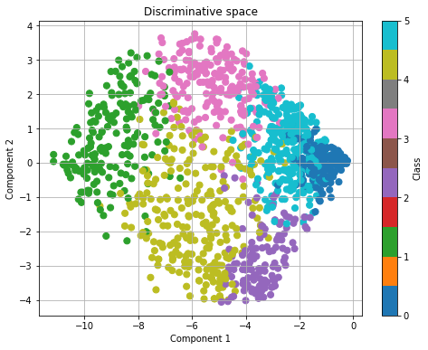

FunFEM¶
This page references the official documentation of FunFEM.
Method Description¶
FunFEM is a model-based clustering method specifically designed for functional data, such as time series. It employs a discriminative functional mixture (DFM) model that projects the observed curves into a latent functional subspace, where clustering is performed. The key steps of the method are:
Functional Data Representation
Each observed curve is first smoothed using a basis expansion (e.g., Fourier or spline basis), converting discrete observations into continuous functional forms.
Discriminative Subspace Learning
A low-dimensional discriminative subspace is identified via a generalized eigenvalue problem, maximizing between-cluster variance while minimizing within-cluster variance (Fisher’s criterion).
Model Inference (FunFEM Algorithm)
An iterative Expectation-Maximization (EM)-like algorithm alternates between:
F-step: Update the discriminative subspace orientation.
M-step: Estimate cluster parameters (means, covariances, and noise variances).
E-step: Compute posterior cluster membership probabilities for each curve.
Model Selection
The optimal number of clusters (K) and intrinsic dimensionality (d) are selected using the slope heuristic, a data-driven penalty calibration method, which outperforms BIC/AIC in practice.
Sparse Basis Selection
Optionally, sparsity-inducing regularization (l1 penalty) is applied to select the most discriminative basis functions (e.g., key time intervals or frequencies) for interpretability.
Function¶
This method provides three core functions: fem_sim_data, fem_bifunc, and FDPlot.fem_fdplot. In this section, we detail their respective usage, aswell as parameters, output values and usage examples for each function.
fem_sim_data¶
fem_sim_data generates simulated data.
fem_sim_data()
Parameter¶
The simulated data for this algorithm are built-in and sourced from the French bike-sharing system; they are loaded internally and have no adjustable parameters.
Value¶
The function fem_sim_data outputs a dict represents French bike-sharing system data.
data: the loading profiles (number of available bikes / number of bike docks) of the 345 stations at 181 times.
pos: the longitude and latitude of the 345 bike stations.
dates: the download dates.
bonus: indicates if the station is on a hill (bonus = 1).
names: the names of the stations.
Example¶
fem_bifunc¶
fem_bifunc performs model fitting.
fem_bifunc(fd, K = np.arange(2, 7), model = ['AkjBk'], crit = 'bic', init = 'kmeans', Tinit = (), maxit = 50, eps = 1e-6, disp = False, lambda_ = 0, graph = False)
Parameter¶
Parameter |
Description |
|---|---|
fd |
dict, a functional data dict produced by the GENetLib package. |
K |
numeric or list, a sequence specifying the numbers of mixture components (clusters) among which the model selection criterion will choose the most appropriate number of groups. Default is 2:6. |
model |
list, a list defining discriminative latent mixture (DLM) models to fit. There are 12 different models: “DkBk”, “DkB”, “DBk”, “DB”, “AkjBk”, “AkjB”, “AkBk”, “AkBk”, “AjBk”, “AjB”, “ABk”, “AB”. Users may supply any subset of models as a list; the optimal result will be selected according to the specified criteria. |
crit |
character, the criterion to be used for model selection (‘bic’, ‘aic’ or ‘icl’). ‘bic’ is the default. |
init |
character, the initialization type (‘random’, ‘kmeans’ of ‘hclust’). ‘kmeans’ is the default. |
Tinit |
array, a n x K matrix which contains posterior probabilities for initializing the algorithm (each line corresponds to an individual). Default is (). |
maxit |
character, the maximum number of iterations before the stop of the Fisher-EM algorithm. Default is 50. |
eps |
numeric, the threshold value for the likelihood differences to stop the Fisher-EM algorithm. Default is 1e-6. |
disp |
bool, if true, some messages are printed during the clustering. Default is false. |
lambda_ |
numeric, the (l1 penalty) (between 0 and 1) for the sparse version. Default is 0. |
graph |
bool, if true, plot the evolution of the log-likelhood. Default is false. |
Value¶
The function fem_bifunc outputs a dict including clustering results and information of the model.
model: the model name.
K: the number of groups.
cls: the group membership of each individual estimated by the Fisher-EM algorithm.
P: the posterior probabilities of each individual for each group.
prms: the model parameters.
U: the orientation of the functional subspace according to the basis functions.
aic: the value of the Akaike information criterion.
bic: the value of the Bayesian information criterion.
icl: the value of the integrated completed likelihood criterion.
loglik: the log-likelihood values computed at each iteration of the FEM algorithm.
ll: the log-likelihood value obtained at the last iteration of the FEM algorithm.
nbprm: the number of free parameters in the model.
crit: the model selection criterion used.
allCriterions: stores the criterion values for all models under every combination of K and init.
If disp=True, the following information will be returned.

If graph=True, a plot of the log-likelihood versus iteration number will be returned.

Example¶
FDPlot.fem_fdplot¶
FDPlot.fem_fdplot produces visualizations.
FDPlot(result).fem_fdplot(data, fdobj)
Parameter¶
Parameter |
Description |
|---|---|
result |
dict, a clustering result generated by fem_bifunc function. |
data |
dict, a data set loaded by fem_sim_data function. |
fdobj |
dict, a fd object serving as the first input to fem_bifunc function. |
Value¶
The function FDPlot.fem_fdplot reconstructs the functional profiles for each cluster category, and displays a scatter plot which visualizes the distribution of data samples across different classes.
For each cluster category:
|
|
|
|
|


{kind=link}
{kind=link}
And a scatter plot:
{kind=link}
Example¶
Previous: Methods and Main Functions | Next: FunLBM